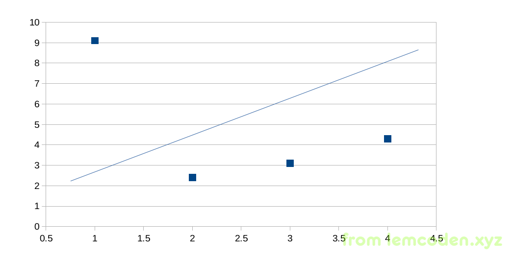
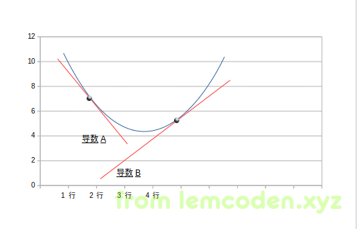
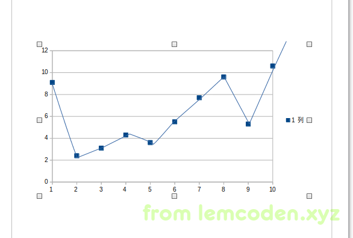
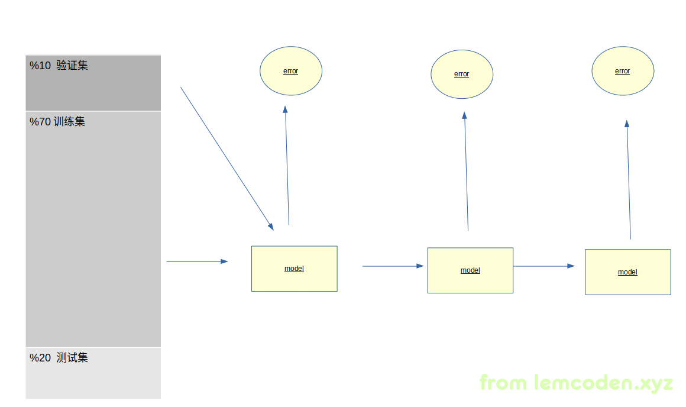
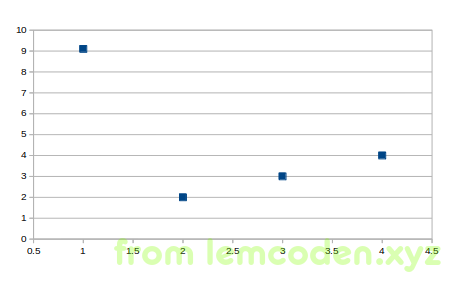
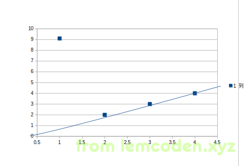
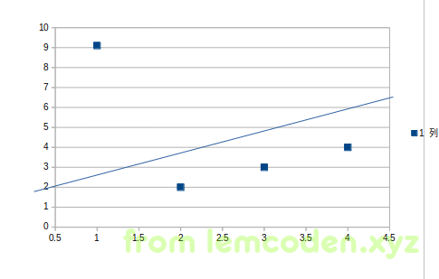

机械学习算法入门01
大数据框架总结
我们平常使用到的大数据开发的框架有hdfs,mapreduce,yarn,hbase,hive,spark,flink等等
林林总总的框架,经过归纳整理,我们可以总结一个大数据通用的技术架构图
首先大数据主要是指对大数据的计算处理,然这个大前提在于数据从哪来,数据来了我们存到哪里.
数据来源主要有两个,(其实细分各个部门各个系统数据极其多,这里只是总结最通用的)
-
服务器产生的积累起来的业务数据,通常存储在mysql,sql server,orcale等数据库当中
-
对前端(网页,移动终端)埋点产生的日志操作数据
这样的业务数据,经过我们设计业务指标,通过我们的mapreduce,spark,flink等计算框架,进行数据清洗,或者ETL之后,存储到我们的分布式文件系统中
我们前面说大数据通用的技术架构图,
现在图的基底出现了,就是我们的hdfs分布式文件系统中,它将文件以block块为单位进行数据存储,这一点非常重要,分布式文件系统那么多,为什么apache还要开发自己的文件系统,主要原因就在此,大数据处理离不开分布式的计算,而分布式的计算数据的IO,数据的存取很重要,而block块的设计,可以让计算框架在分布式的情况下,能够灵活的存取文件系统上的数据.
这个是分布式文件系统的基底,所有的数据存取基本在在hdfs上进行
hdfs有了,就可以开始进行数据计算汇总了,怎么具体的进行计算汇总我们先隔过去,先从一个最粗的粒度去认识,就是计算资源如何去管理,去调度,
这就需要我们的yarn资源调度框架,将我们的CPU核数和内存抽象成计算资源进行调度.(调度分为公平调度,FIFO先入先出调度,容量调度)
PS:一般企业级的大数据架构不会使用spark的standalone.资源调度框架一个就够了,这个必须统一化,否则不同的项目不同的资源管理,每个资源管理都把整个集群的CPU和内存当作资源,肯定会乱套的
现在有文件系统和资源管理框架了
接下来就是框架到业务的过渡.
大数据有很多业务,基本的BI系统,数据体量大的会建立数据仓库,之后有基于数据仓库的用户画像系统,业务报表的展示,推荐系统等等.
我们操作业务数据一般使用SQL语言,这个已经是一个约定俗成的习惯,于是有了hive这种,将SQL语句转换成计算任务的数据仓库工具.
说到这里有一个问题就是,为什么出来impla,spark sql这样的计算速度快的工具,hive却依然能活下来呢?
因为hive的元数据管理这个轮子没必要再造一次.大数据当中凡是遇到sql的地方都需要和元数据挂钩,没有元数据sql就没办法生成查询计划,所以hive的底层计算框架可以换(mr-spark),sql解析到任务的程序可以换(hive driver --> spark sql),但其元数据服务完全没有必要再开发一份
好的,然后到目前位置所说的这些框架都有自己落地架构即都有自己相关的角色,
- hdfs NN DN
- yarn resourcemanager nodemanager
- hive driver metadata-server hiveserver2
再分布式情况下需要有一个服务协调这些角色相互协作,
于是zookeeper就出来了,它是一个轻量级的分布式协调服务,可以用来做统一配置,注册发现和组服务等,其实zookeeper不止我们想象的那样只是做大数据框架的高可用.
粗粒度的架构有了,就可以开始继续聊
细粒度的计算框架,即mapreduce,spark
计算框架现在基本很少使用mapreduce,大多数使用的spark,
spark计算速度比mapreduce快的原因有两个,一个是粗粒度的资源调用(spark的进程启动起来之后就会迅速将CPU核心和内存占慢,而不像mapreduce那样一次任务启动一个JVM进程),而是类似于pipeline的处理模式,除非遇到shuffle或者持久化,否则数据都只会一条一条在管道中迅速流通.
而随着人们对计算速度的要求越来越高,流式计算的概念应运而生,spark 也衍生出了微批处理的spark streaming框架,spark steaming 的bacth, window,slide windows,有状态计算 概念这里就不再多加进行赘述.
流式计算速度下,对数据存取的速度必定有要求,所以
流式计算下特别适合使用HBase这样的列式数据库进行存取,
hbase 除了使用内存缓存加速存取,并且使用布隆过滤器减少磁盘IO请求.
最后是数据拉取,数据迁移的框架flume和kafka
flume不用说太多日志收集框架,基于source和sink的协议API开发的
kafka有很多聊头,它是基于生产者消费者模式的消息队列,起到解耦各个子系统传输的中间件,在数据业务处理中也起到了削峰填谷的作用,并且kafka数据是怼磁盘的,速度却仍然很快,主要有两个原因,一个是顺序写,一个是zero-copy
好了整个大数据框架基本溜了一遍
我们一般将之前的所聊应用于数据指标的分析,汇总上,重点在于数据的梳理总结归纳,而人工智能应用于大数据技术上,就是展望未来,提供对未来模型的一个预测
从模型的一个预测开始讲起
在人工智能领域有一句话叫做:
数据量决定了模型的高度,而算法只是逼近这个高度
所以评价一个人工智能领域的好坏,在于数据量的大小与否,如果数据量极小,那只能说明它可能只是为了人工智能而人工智能.
但是作为大数据开发如果对算法本身不理解,那么在项目的实际落地时,对相关函数库,机械学习的相关API是很难知道怎么调用的.
所以理解简单的机械学习算法是开发人工智能+大数据项目的必备知识
那么我们先从最简单的机械学习算法,即线性回归算法开始聊起.先把线性回归算法的误差函数摆出来
等等,等等,什么鬼?一堆数学符号?
不要紧,下面会对这个公式进行细致的讲解.
首先,机械学习主要做的事情就是输入一堆数据,数据有标签和结果值,我们通过相应的算法计算这堆数据,计算出一个数学模型,让这个数据模型能够通过输入标签预测出结果
那么我们通过简单的二维坐标系去理解这个过程,如下:

假设我们的x是输入的标签值,y是我们的结果值,而中间的这个根线是我们的通过算法计算出来的数学模型,那怎么衡量我们的训练出来的模型好不好呢?
我们可以通过求均方差的方式,来计算误差值,现在再看一下我们的误差函数
首先其中的
指代的就是那条回归线,具体公式如下
实际开发过程中有很多x自变量和w控制变量,为了能让这个函数在图上显示,所以x和w精简为一个
然后在把H函数代入到上面的误差函数中,其中M的意思为输入数据的条数,有多少条数据就计算多少条数据的均方差.
这个均方差就是测试我们这个数学模型是否精准的误差值.但是到这里就会有一个问题就是分母多出来的2是什么意思?.
紧接着下面的剃度下降法使用的函数会聊到,
好了,现在我们的误差函数有了,但是得到我们模型的误差值之后,应该如何调整我们的数学模型呢?
这里也是使用一个函数公式进行的调整
求误差函数的偏导数,并且人为给定一个步长α
而刚才我们的分母为二主要是为了求偏导数方便.
这个就是指导调整w控制变量的函数.
我们调整线性回归的数学模型.说白了,其是就是调整W0W1W2,这些控制变量.
为什么要减去一个导数?而不是固定值
首先我们可以确定的是,这个误差函数是一个凹函数,那么它肯定有一个极小值在里面,而我们之所以要将导数放入我们的调整公式里面主要是因为两点原因:
-
导数的函数值在极小值前是负值,在极小值后是正值,这样,导数可以指导我们的调整方向
这里画一个简单的图解验证一下

如上所述,W0值处于导数A值的时候为负,代入调整公式W0就会增加,W0处于导数B值的时候为正,代入公式W0就会减少
-
导数的函数值可以解决如果步长过大,导致调节时W值来回振荡的问题
现在假设我们的调整公式长这样子

那当W0在A点的时候,如果我们一不小心将α的值调整过大,就可能会将W0+α调整到B点,然后再代入到调整函数中W0-α调整到A点,W0只会再A点B点中间来回振荡
但是使用导数就不一样了
我们知道,导数绝对值的大小大概使用斜率表示,我们B点导数的斜率明显小于A点,也就是说如果α的值过大,A点跳到到了B点,但是B点的导数小一点,所以B点代入调整公式之后,调整步长会变小.不会再次调整到A点.
就这样,W0不断调整,并且调整幅度越来越小,慢慢逼近极小值.这个调整方法也就是大家经常听到的所谓的梯度下降法
**不过需要知道的是,我们实际的生产环境当中,我们很难把模型调整到最准确的极小值,也不能把模型调到准确极小值.**为什么?
假设我们把数据调整到极小值这里,也就是说我们的误差函数为0,那情况就像下面这种:

反映历史非常准确,完完全全就是个历史折线图,这样的图对数据的分布规律的探究没有任何的意义,我们想要的是数据的一个分布趋势,即其背后的规律.这种情况就叫做过拟合,可见和历史数据太贴近也不是什么好事.
那我们怎么防止我们训练出的模型出现过拟合的状况呢?
从工程的角度可以这样做:
将数据分为训练集,验证集和测试集

图中的百分比例仅供参考
然后利用训练集,训练出我们的数学模型,再通过验证集来验证我们的模型,得出一个误差值,
之后再训练一个模型,训练模型之后,再通过验证集验证出一个误差值,
整个过程验证集不参与训练,
只是为了求出误差值.这样循环往复,
按道理来说,通过训练集不断的训练,
误差值应该越来越低,但是,当产生过拟合之后,通过验证集进行验证的误差值会变得越来越大,
所以我们就寻找验证集验证出来误差值的转折点,这样,训练出来的模型是最贴合数据规律的.
再回顾一下之前的误差函数,大家有没有什么问题?
比如,为什么用均方差,平均的绝对值差不可以吗?
这个可以举个例子

比如出现如上述的数据
假如我们使用绝对值来训练模型,那么模型是这样子的
把
而均方差的模型大概率是这样的

这怎么可能???博主你又乱说
我真没乱说,我们可以直接将相应的数值代入公式,
绝对值第一条回归线误差值:8+0+0+0=8
绝对值第二条回归线误差值:6+2+2+2=12
均方差第一条回归线误差值:82+02+02+02=64
均方长第二条回归线误差值:62+22+22+22=48
很明绝对值选择误差值小的第一条回归线,均方差选第二条
但是第一条回归线并没有很好的照顾到第一个离群值,这也就是为什么选均方差的原因.
其实训练出一条回归线还有另一种方法,就是求出所有W值的偏导数并且求出极小值,不过这种方法计算量很大,大数据环境下不适用,下面给出偏导求解公式
最后我们整理一下线性回归,其实不仅是线性回归,而是一般机械学习项目的一般套路:
- 随机产生w参数
- 把w参数与样本数据代入到误差函数中,求解误差值
- 误差值与用户指定的误差阈值比较
- 如果大于用户的误差阈值,继续通过调整函数调整w参数,重复二到三步
- 如果误差小于用户指定的误差阈值,那么此时的w参数就是最佳的w参数